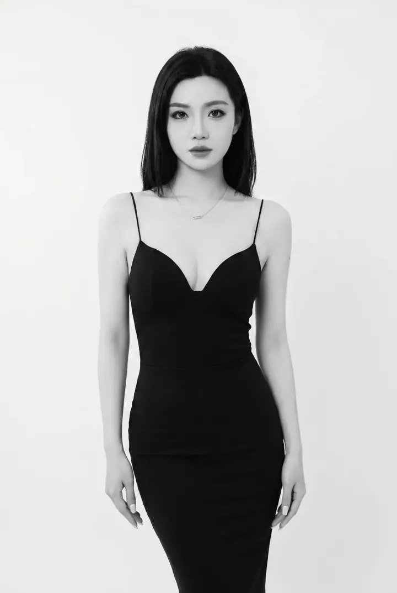

ElaineSoft, modern beauty
Bridal, portraits and special occasions with the person at the centre.
Senior Artist
Enquire with Elaine13 photographs. Open one to keep as a reference.

A reading of the work / Elaine
Sleek shape. Soft finish.

What catches your eye? Select a detail.
Keep a detail as a starting point for your own look.


Your plans,
with Elaine.
Share your date, occasion and the detail you saved.
Start your enquiry